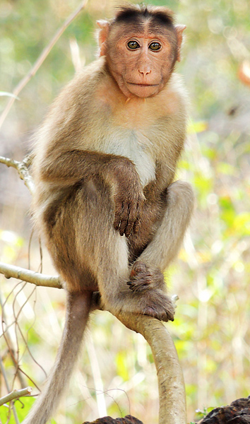
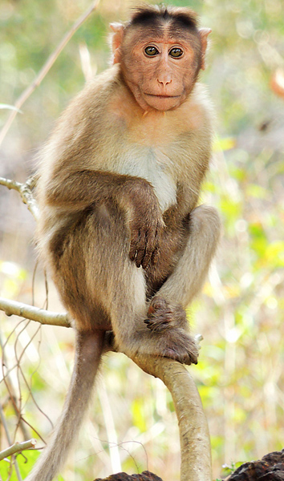

Lacking brains, blood, or even hearts, jellyfish are pretty simple critters. They are composed of three layers: an outer layer, called the epidermis; a middle layer made of a thick, elastic, jelly-like substance called mesoglea; and an inner layer, called the gastrodermis
A mouse, plural mice, is a small mammal. Characteristically, mice are known to have a pointed snout, small rounded ears, a body-length scaly tail, and a high breeding rate.
Monkeys needs a large amount of social interaction. A pet monkey deprived of your time and attention will likely develop not only severe behavioral problems, such as screaming and biting, but also psychological issues that can be difficult to remedy.
There are three main types of donkeys: wild, feral and domesticated. Wild donkeys typically grow to around 49 inches (125 centimeters) from hoof to shoulder and weight around 551 lbs.
Bears are mammals that belong to the family Ursidae. They can be as small as four feet long and about 60 pounds (the sun bear) to as big as eight feet long and more than a thousand pounds (the polar bear).
Every shark belongs to the classification Chondrichthyes which identifies them as cartilaginous fish, fish whose internal skeletons are comprised of flexible cartilage rather than bone.